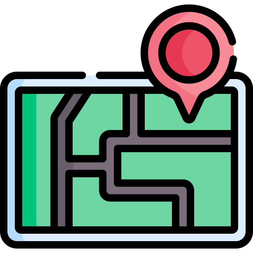

Para comenzar:
Soy ingeniero ambiental de profesión, desde mis últimos semestres cursados en la universidad me empecé a sumergir en este maravilloso mundo de la programación, comenzando con python aplicado al software de geomática ArcMap de ArcGIS, desde allí me he interesado muchísimo en como la programación puede mejorar procesos, buscando como aprender más y más, expandiendo mis conocimientos en diferentes lenguajes de programación para diferentes usos.
Lo que me interesa profesionalmente
Mis intereses y crecimiento profesional e intelectual en el mundo de la programación abarca los siguientes paradigmas:
 Desarrollo web (Fullstack)
Desarrollo web (Fullstack) Automatización
Automatización Ciencia de Datos
Ciencia de Datos- Geomática
¿Qué me motiva?
El creer que siempre se puede realizar mejoras constantes no solo a nivel personal, si no también a nivel profesional en los diferentes procesos de mi entorno laboral, no solo facilitándome el día a día si no también mejorando la eficiencia y la calidad de mi trabajo,además de poder trabajar de manera grupal para lograr proyectos y objetivos únicos.